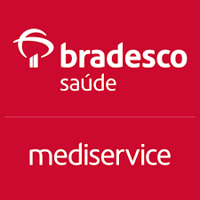
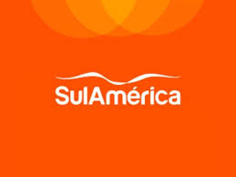
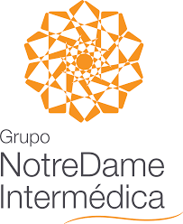
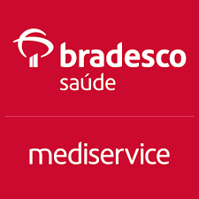
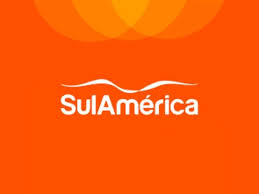
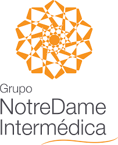

Missão
Proporcionar cuidados de saúde, de excelência, humanizados e centrados no paciente, promovendo bem-estar, recuperação e qualidade de vida através de uma assistência integrada, ética e inovadora, promovendo o ensino e a pesquisa.
O Hospital Santa Casa oferece atendimento humanizado e tecnologia de ponta para garantir sua saúde e bem-estar
Proporcionar cuidados de saúde, de excelência, humanizados e centrados no paciente, promovendo bem-estar, recuperação e qualidade de vida através de uma assistência integrada, ética e inovadora, promovendo o ensino e a pesquisa.
Ser referência regional em assistência hospitalar humanizada e centrada no paciente, reconhecida pelo compromisso com a excelência, inovação e a promoção de uma experiência de cuidado que respeite a individualidade e valorize o desenvolvimento pessoal e profissional de seus colaboradores.
Humanização: Atendimento centrado na pessoa com respeito e empatia
Excelência: Busca contínua pela qualidade em todos os serviços
Inovação: Adoção de novas tecnologias e práticas modernas
Ética e transparência Conduta íntegra e relações de confiança
Educação:Investimento em conhecimento e formação contínua
Em 1895 surgiu em Tatuí a Beneficência Tatuhyense, embrião da Santa Casa de Misericórdia. Ela foi fundada em 8 de julho de 1895, no salão nobre do então Gabinete de Leitura Tatuiense, onde nos dias de hoje está o estacionamento do Banco Itaú, na Praça da Matriz. Esta teria sido, segundo o historiador Renato Ferreira de Camargo, a terceira instituição de caridade fundada em Tatuí, Antes, vieram o “Asilo de Caridade” (1885, construído para atender aos que sofriam do Mal de Hansen) e o “Hospital do Isolamento” (construído também para atender aos portadores do Mal de Hansen, numa área que pertencia ao jovem Dr. Emílio Ribas, trazido a Tatuí pelo industrial Manoel Guedes). Mais tarde, os doentes foram removidos para a Vila São Lázaro, ficando ali abrigados até a década de 30. A assembléia para constituição da Beneficência Tatuhyense foi presidida pelo Capitão Antonio de Oliveira Leite Setúbal, servindo como secretários os senhores Eugênio Frederico dos Santos e José Thomaz Correia Guimarães (Nhô Nhô da Botica). O primeiro Conselho Administrativo foi formado por: Cel. Affonso de Camargo Penteado, Manoel Guedes Pinto de Mello, Manoel Luiz da Silva Sá, Antonio Apolinário da Costa Neves e Eugênio Frederico dos Santos.
Missão: Proporcionar cuidados de saúde de excelência, humanizados e centrados no paciente, promovendo bem-estar, recuperação e qualidade de vida através de uma assistência integrada, ética e inovadora, promovendo o ensino e a pesquisa.
Visão: Ser referência nacional em assistência médico-hospitalar até 2030.
Valores: Ética, Compromisso Social, Humanização, Inovação e Qualidade.
Cardiologista
Ginecologia e obstetrícia
Cordenador Obtetrícia
Cirurgião Urologista
Coordenador Cirurgia geral
Clínico geral e Geriatria
Coordenador Clínica médica

Anestesiologista
Cordenador clínico

Ginecologista e obstetra
Diretora
presidente
Pediatra UTI neonatal
Coordenadora Pediatrica
Ortopedista
Coordenador Ortopedia
Unidade de cardiologia com tecnologia de ponta para exames, cirurgias e tratamentos cardíacos.
Atendimento infantil completo com centro de vacinação, acompanhamento pediátrico e emergência.
Ressonância, Tomografia, Ultrassonografia e Raio-X com equipamentos de última geração.
Centro cirúrgico equipado para procedimentos de alta complexidade e cirurgias robóticas.
Atendimento emergencial 24h com equipe multidisciplinar para todas as especialidades.
Diagnóstico e tratamento de doenças neurológicas com tecnologia avançada e equipe especializada.
Trabalhamos com os principais planos de saúde e instituições para garantir o melhor atendimento aos nossos pacientes.

 





Apresente sua carteirinha no momento do atendimento. Para consultas e exames, é necessário apresentar autorização prévia do convênio.
Alguns procedimentos podem ter cobertura parcial ou exigir coparticipação. Consulte seu plano para detalhes.
Entre em contato com nossa central de convênios: (11) 3456-7890 | convenios@santacasa.org.br

De 10/04 a 30/05, estamos realizando a campanha anual de vacinação contra gripe para grupos prioritários.
05 de Abril, 2023
Abertas inscrições para o processo seletivo de enfermeiros com especialização em UTI. Inscrições até 30/04.
28 de Março, 2023Investimento de R$ 3,5 milhões amplia capacidade diagnóstica e reduz tempo de espera para exames.
15 de Março, 2023Compromisso com a gestão pública e o acesso à informação.
Relatórios contábeis e balanços mensais
AcessarEditais, processos licitatórios e contratos firmados
AcessarIndicadores de desempenho e metas institucionais
AcessarQuadro de pessoal e concursos públicos
AcessarNosso banco de sangue precisa de doações regulares para manter os estoques e atender pacientes em tratamento.
Segunda a Sexta: 7h às 18h
Sábados: 8h às 12h
Av. Saúde, 1234 - Centro
(11) 3344-5566
bancodesangue@santacasa.org.br
Sua opinião é fundamental para melhorarmos nossos serviços. Utilize os canais abaixo para:
Todas as manifestações são tratadas com sigilo e encaminhadas aos setores responsáveis.
Para denúncias anônimas, utilize nosso canal exclusivo: (11) 3344-7788 ou ouvidoria@santacasa.org.br